自定义C#类库（.dll文件）
环境配置
操作系统：Windows 10
开发工具：Visual Studio 2022
.Net桌面开发环境：
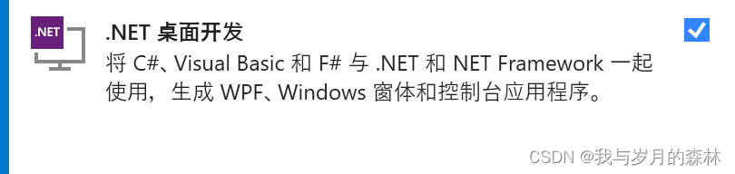
开发步骤
创建C#类库项目
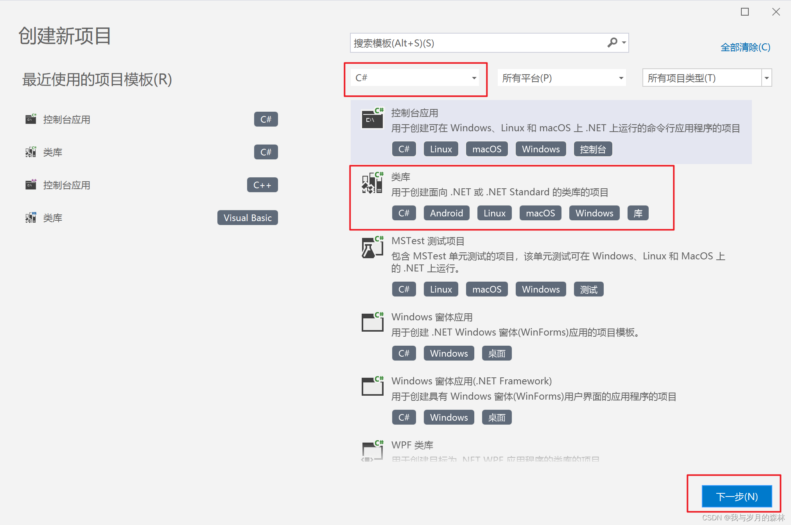
配置项目名称和项目路径
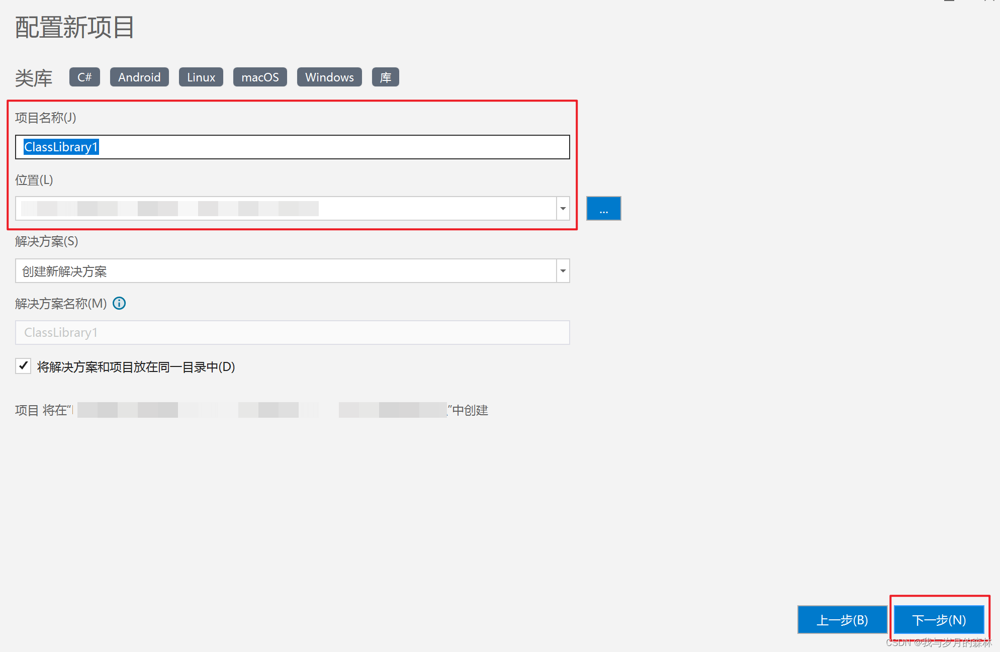
选择所使用的框架，完成项目创建
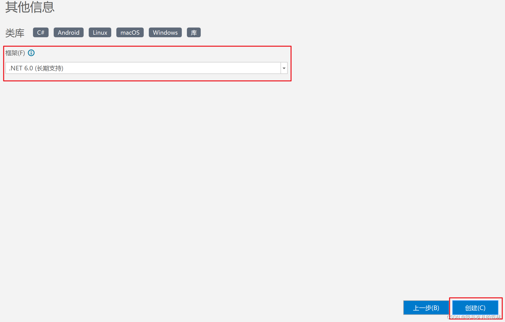
创建代码文件，并完成依赖项导入、代码编写以及代码注释
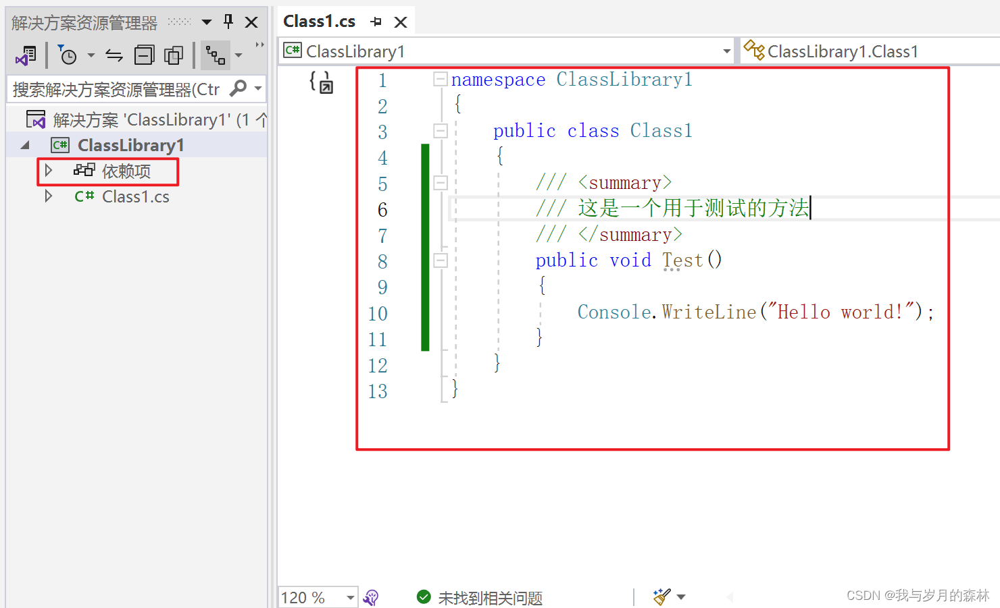
完成类库项目开发后，在顶部菜单栏（生成——配置管理器）打开配置管理器
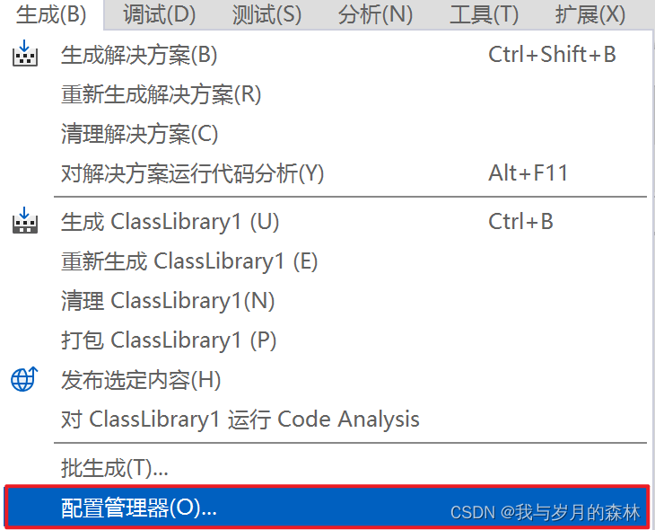
配置管理器中将项目配置为Release，如果涉及到平台请自行配置
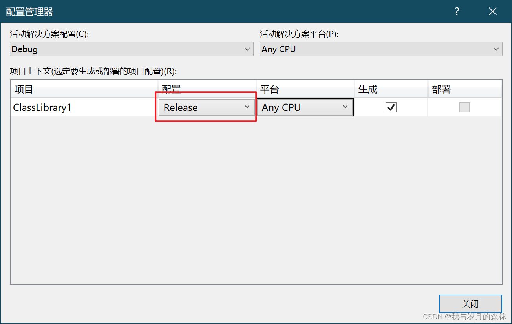
在解决方案资源管理器目录中找到项目并鼠标右键选择并打开项目属性面板
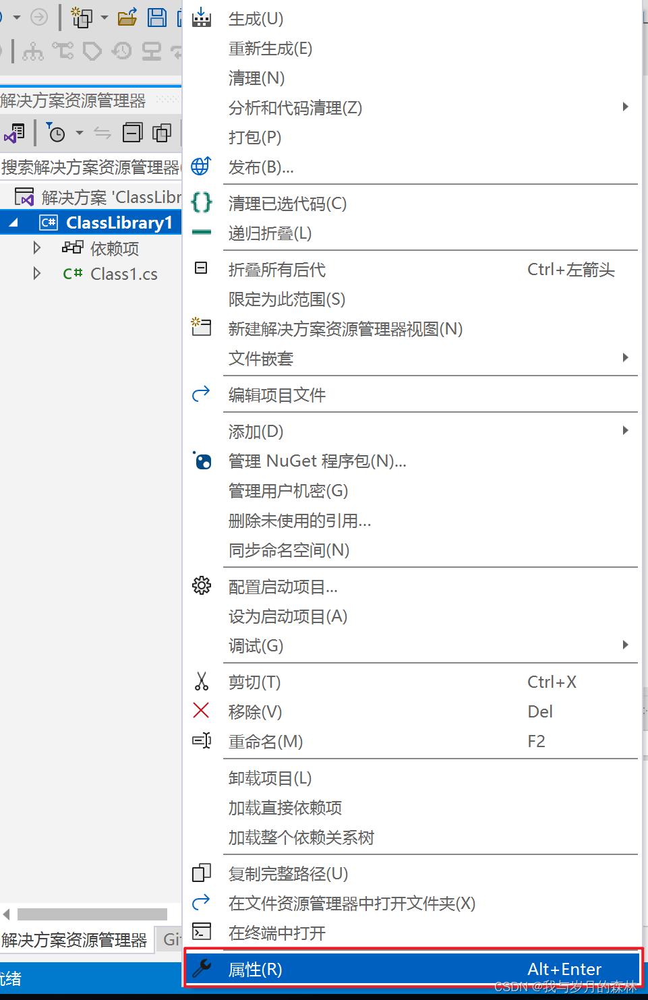
可以对生成中的选项进行设置，例如开启生成API文档的功能
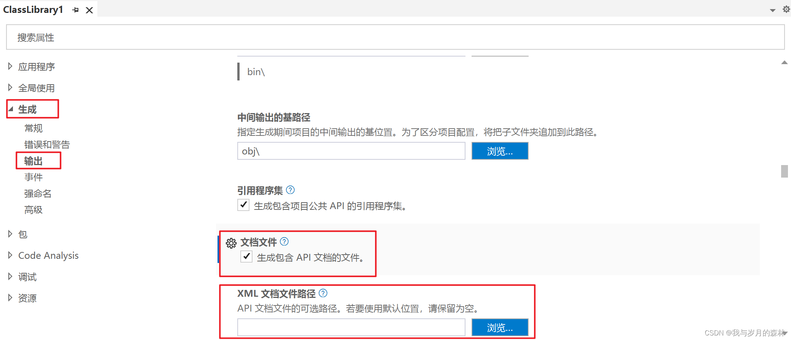
配置完成后，在顶部菜单栏（生成——生成xxx，xxx表示项目名）生成类库
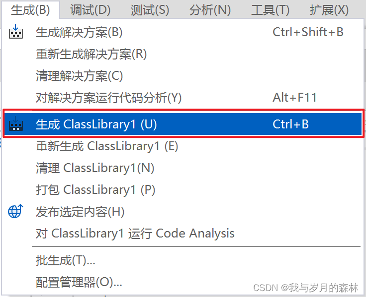
查看生成结果信息
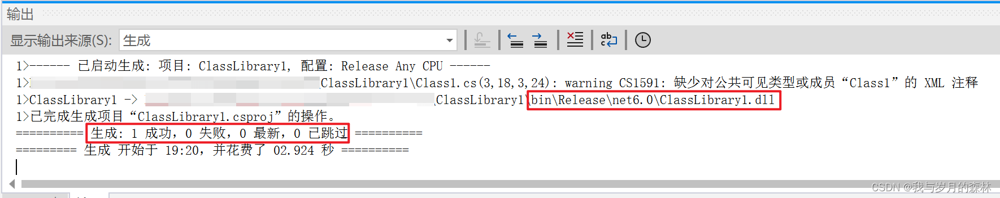
特殊说明
注意导入项目的依赖项，缺乏依赖可能导致整个类库项目的功能无法正常使用；
类库文件不易于调试，所以可以考虑采用日志的方式来记录调试信息；
好的类库文件应该编写xml文档注释，以便于类库调用者更好地使用类库；
默认导出的类库文件路径：项目目录\bin\Release\框架名\项目名.dll；
默认XML文档与导出的类库文件位于同一目录下。
本博客所有文章除特别声明外，均采用 CC BY-NC-SA 4.0 许可协议。转载请注明来源 我与岁月的森林的博客！
评论